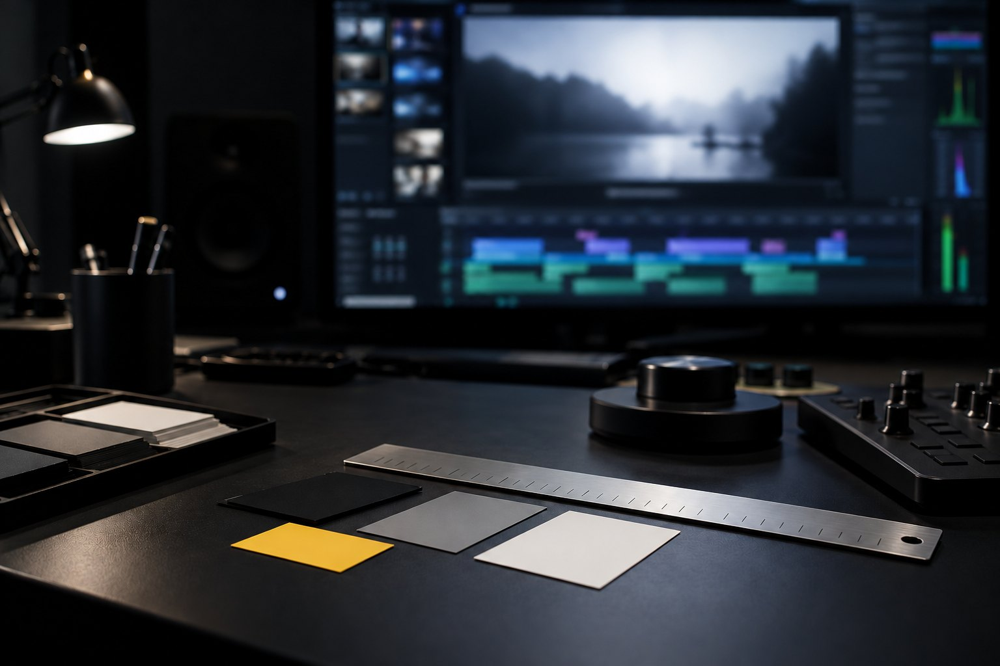

Formação Cinema com IA · curso 3 de 6 · 8 aulas
Motion por código com agente: o vídeo que sai do terminal, igual toda vez
HyperFrames e Remotion transformam HTML e React em MP4. Você pede ao agente, confere em cinco quadros, prende a peça a um DESIGN.md, põe voz e legenda locais e entrega uma abertura de 15 s em 16:9 e 9:16. Tudo renderiza na sua máquina, sem crédito.
- 8aulas
- 24exercícios com saída esperada
- 16blocos testados no kit
- 0créditos gastos: render local
As aulas
Do modelo mental ao render nos dois formatos: determinismo, HyperFrames, o pedido ao agente, a marca, Remotion, bibliotecas, áudio e a sua peça.
- Aula 1 · 15 minVídeo é código: composição com tempo e render determinísticoNo motion por código, o vídeo é uma página que sabe desenhar qualquer instante. Um navegador sem tela pede o quadro 0, o 1, o 2, e o FFmpeg junta tudo num MP4. Se a mesma entrada der sempre os mesmos quadros, você pode refazer, corrigir e versionar o vídeo como código. Nesta aula você prova isso na sua máquina.
 Aula 2 · 15 minHyperFrames do zero: HTML com data-* vira MP4HyperFrames é um motor aberto do HeyGen que renderiza HTML em vídeo. Três atributos dizem o tamanho e a duração, uma timeline GSAP pausada diz o movimento, e o check confere tudo antes do render. Nesta aula você cria o projeto, escreve a primeira composição e sai com um MP4 conferido.
Aula 2 · 15 minHyperFrames do zero: HTML com data-* vira MP4HyperFrames é um motor aberto do HeyGen que renderiza HTML em vídeo. Três atributos dizem o tamanho e a duração, uma timeline GSAP pausada diz o movimento, e o check confere tudo antes do render. Nesta aula você cria o projeto, escreve a primeira composição e sai com um MP4 conferido. Aula 3 · 15 minPedir ao agente: o método RISE e o teste em cinco quadrosPedido vago gera animação genérica e dez rodadas de correção. O RISE organiza o pedido em quatro partes: Referências, Ideia, Estilo e Examinar. A última é a que mais salva: o agente confere cinco quadros e corrige antes de você renderizar. Nesta aula você escreve o pedido e confere a resposta com um comando.
Aula 3 · 15 minPedir ao agente: o método RISE e o teste em cinco quadrosPedido vago gera animação genérica e dez rodadas de correção. O RISE organiza o pedido em quatro partes: Referências, Ideia, Estilo e Examinar. A última é a que mais salva: o agente confere cinco quadros e corrige antes de você renderizar. Nesta aula você escreve o pedido e confere a resposta com um comando.
Aula 4 · 15 minSistema de marca e filosofia de movimento: o DESIGN.md do seu vídeoSem regra escrita, cada pedido ao agente traz uma cor nova e um movimento diferente, e as peças não parecem da mesma marca. O DESIGN.md é o arquivo que o agente lê antes de compor: cores, fontes, como as coisas se movem e o que é proibido. Nesta aula você escreve o seu e reprova a cor fora da marca com um comando. Aula 5 · 15 minRemotion: frame, interpolate, spring e quando escolher ReactRemotion faz o mesmo que o HyperFrames com outra linguagem: cada quadro é um componente React que recebe o número do quadro. interpolate mapeia quadros em valores e spring dá física à entrada. Nesta aula você renderiza a mesma ideia da aula 2 em React, lê a licença e decide quando cada motor vale mais.
Aula 5 · 15 minRemotion: frame, interpolate, spring e quando escolher ReactRemotion faz o mesmo que o HyperFrames com outra linguagem: cada quadro é um componente React que recebe o número do quadro. interpolate mapeia quadros em valores e spring dá física à entrada. Nesta aula você renderiza a mesma ideia da aula 2 em React, lê a licença e decide quando cada motor vale mais. Aula 6 · 15 minGSAP, D3, Three.js ou Lottie: qual biblioteca para cada peçaCada tipo de movimento tem uma biblioteca que resolve em poucas linhas e outra que briga com você. Coreografia de texto é GSAP; gráfico que nasce de dado é D3 desenhando e GSAP animando; cena 3D é Three.js; animação pronta de After Effects é Lottie. Nesta aula você escolhe pela pergunta certa e renderiza um gráfico e uma cena 3D.
Aula 6 · 15 minGSAP, D3, Three.js ou Lottie: qual biblioteca para cada peçaCada tipo de movimento tem uma biblioteca que resolve em poucas linhas e outra que briga com você. Coreografia de texto é GSAP; gráfico que nasce de dado é D3 desenhando e GSAP animando; cena 3D é Three.js; animação pronta de After Effects é Lottie. Nesta aula você escolhe pela pergunta certa e renderiza um gráfico e uma cena 3D.- Aula 7 · 18 minÁudio e legenda no código: narração local, trilha e karaokêO mesmo CLI que renderiza também fala e escuta, tudo na sua máquina: gera a narração com uma voz local, transcreve palavra por palavra com o tempo de cada uma e entrega isso à composição. Nesta aula você monta o lado técnico do som: narração, uma trilha de ensaio e a legenda karaokê que acende cada palavra na hora em que ela é dita.
 Aula 8 · 20 minSua peça: abertura de 15 s em 16:9 e 9:16, renderizada e conferidaHora de juntar tudo numa peça que você usa: uma abertura de 15 s com o seu DESIGN.md, nos dois formatos que as redes pedem. O 9:16 não sai do 16:9 por uma opção de render: é outra composição que reaproveita o CSS e a coreografia. Nesta aula você entrega as duas, conferidas pelo kit, e monta o plano com datas.
Aula 8 · 20 minSua peça: abertura de 15 s em 16:9 e 9:16, renderizada e conferidaHora de juntar tudo numa peça que você usa: uma abertura de 15 s com o seu DESIGN.md, nos dois formatos que as redes pedem. O 9:16 não sai do 16:9 por uma opção de render: é outra composição que reaproveita o CSS e a coreografia. Nesta aula você entrega as duas, conferidas pelo kit, e monta o plano com datas.
Para quem é
- 1Quem já usa Claude Code ou Codex no terminal e quer vídeo, abertura ou motion sem editor gráfico.
- 2Quem faz vídeo para empresa ou curso e precisa repetir a mesma peça com outro texto, outra cor ou outro formato.
- 3Dev que quer saber quando escolher HTML (HyperFrames) e quando escolher React (Remotion).
O que você sai fazendo
- 1Provar que o seu render é determinístico e achar o que quebra isso.
- 2Pedir uma composição ao agente com o método RISE e conferir em cinco quadros antes do MP4.
- 3Escrever o DESIGN.md do vídeo e reprovar cor fora da marca com um comando.
- 4Pôr narração e legenda karaokê feitas na sua máquina e entregar 16:9 e 9:16 conferidos.
Antes de começar
- 1Linux ou macOS com Node 22 ou mais novo, FFmpeg, Python 3 e git. No Windows, use o WSL.
- 2Uns 2 GB livres: o navegador do render (~240 MB), a voz local (~340 MB) e o modelo de transcrição (~490 MB) baixam no primeiro uso.
- 3Recomendado: o curso 0 (Direção) para a linguagem de plano e luz. Som, montagem e ética ficam no curso 2.